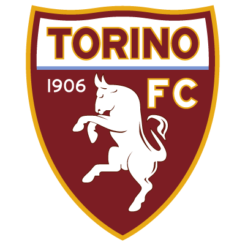

TORINO FAN PAGE (alpha)
A fan website
Hi! im PTC.
No,this is not an oficial website, but a fan website for TORINO FC,
a club which i sympathize with. A club that could be something compared
to Real Madrid,Bayern... it has instead became one of the biggest "what if's"
in the football's history.
They're one of the oldest club in Italy and has a interesting history.Also,
their culture and the presence of maroon.
Thats very cool man.
Go on,drag your screen to the right side to see whats about!
